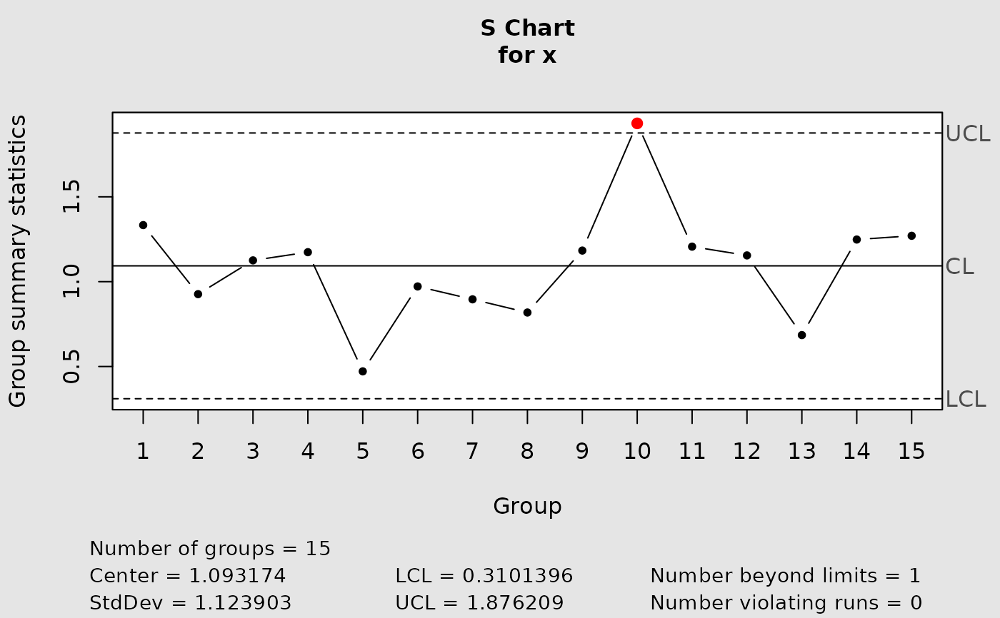
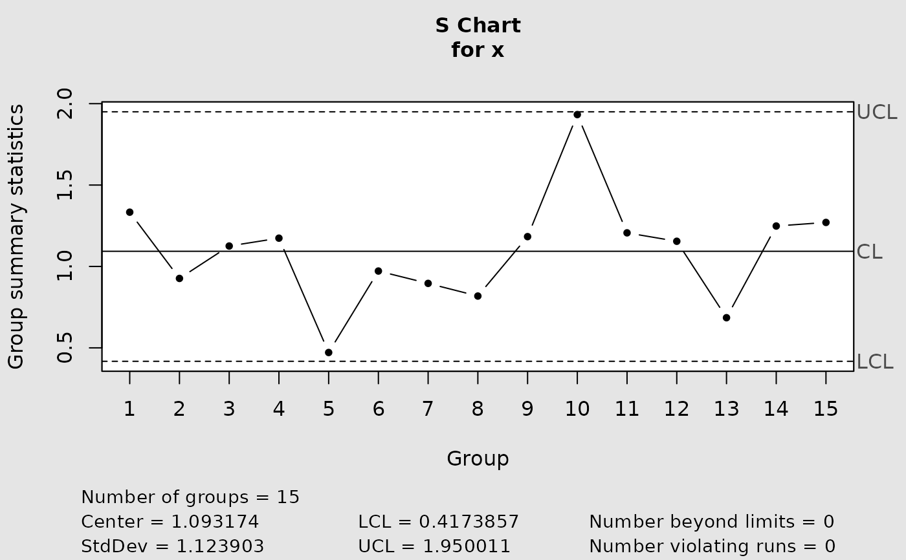

Build a control chart for subgroup standard deviations using either normalized limits or exact probability limits derived from the chi-square distribution of the sample variance.
Usage
cchart.S(x, type = c("n", "e"), m = NULL)Arguments
- x
Subgroup data accepted by
qcc::qcc()for an"S"chart. Rows represent subgroups and columns observations within subgroups.- type
Either
"n"for normalized limits or"e"for exact equal-tail probability limits.- m
Integer subgroup size, at least 2. It is required when
type = "e". If omitted, a warning is issued and the normalized chart is drawn instead.
Value
Invisibly, the "qcc" object returned by qcc::qcc(). The function also draws the chart.
Details
For exact limits, \((m-1)S^2/\sigma^2\) is treated as chi-square with \(m-1\) degrees of freedom. Limits are obtained from the 0.00135 and 0.99865 chi-square quantiles and the scale estimate qcc::sd.S(x).
Errors and warnings
An error is raised for an unsupported type or an invalid supplied m. If exact limits are requested without m, the function warns and falls back to the normalized chart.
Examples
data(softdrink)
normalized <- cchart.S(softdrink, type = "n")

exact <- cchart.S(softdrink, type = "e", m = 10)
